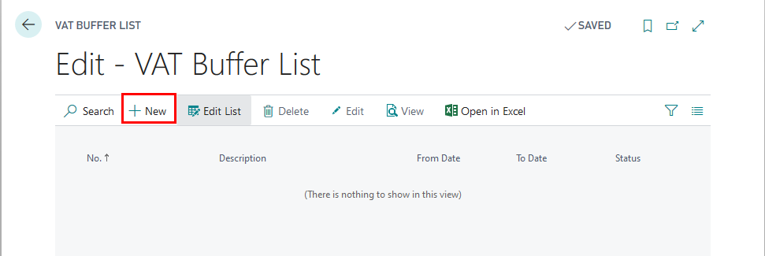
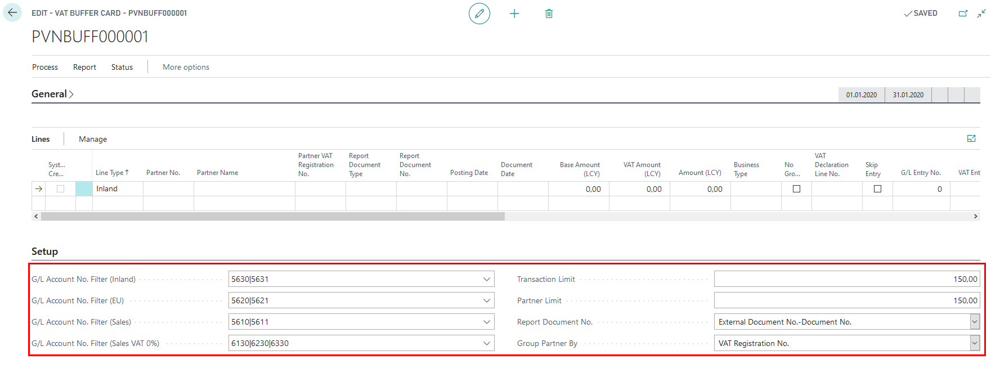
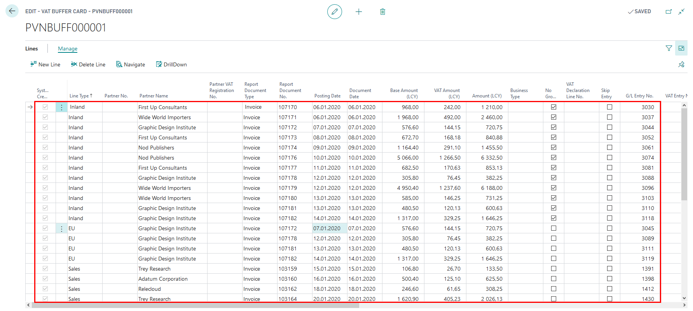
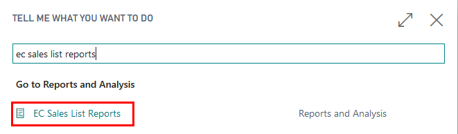
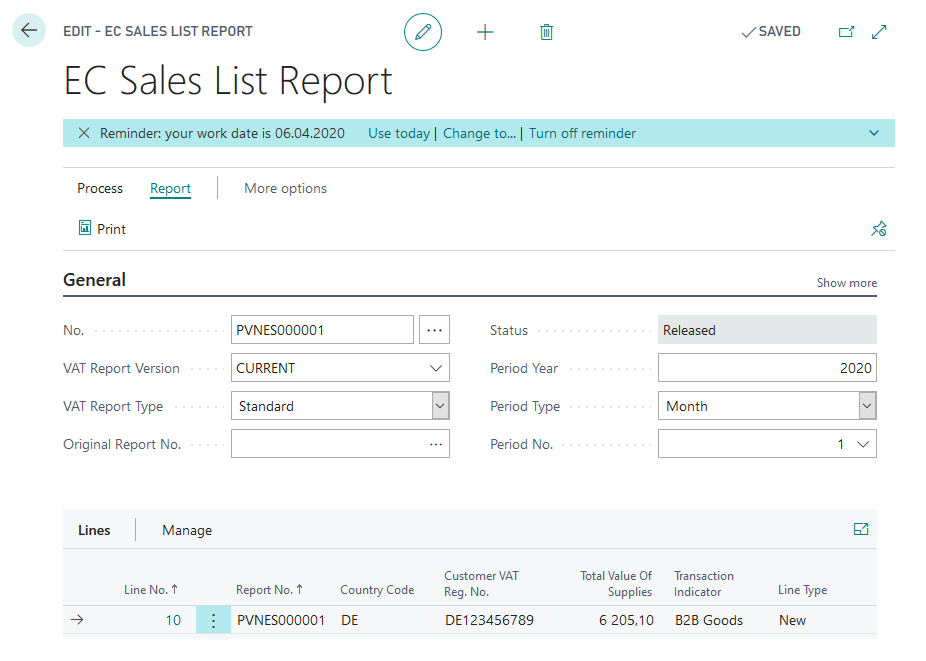
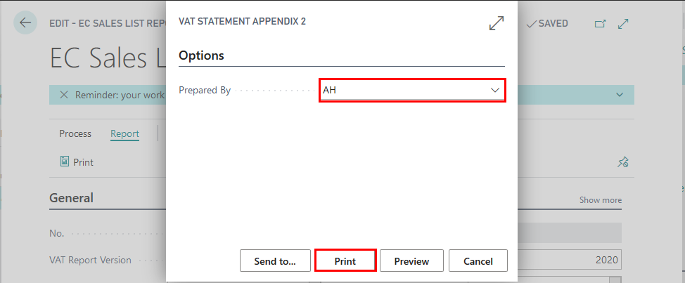
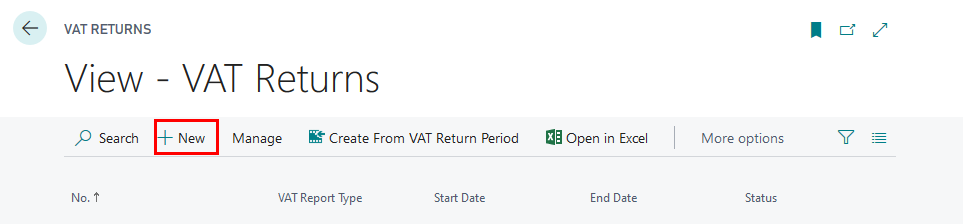
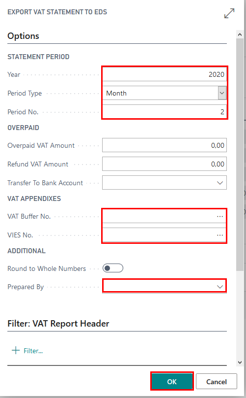

Key Usage Scenarios
Overview
Walkthrough: Import Configuration package
About this walkthrough: Configuration package LVI.LVI.VAT can only be imported, if only LVI.LVI.STANDARD configuration package was applied previously. If not, then all of the setup mentioned below is required to be completed manually.
Basic necessary system setup for the use of Latvian VAT Reporting Localization is created, when applying the configuration package LVI.LVI.VAT.
Roles: No specific user roles are required.
Story: You are Katrīna Pavlova, assigned by Cronus International to be a CFO in Cronus Latvia, SIA. The company runs business in the sphere of sales of furniture and rendering consultation services related to interior design upon request of local customers. Cronus Latvia, SIA is required to import LVI.LVI.VAT configuration package, because LVI.LVI.STANDARD package was previously applied.
Availability: can be accessed from Search for Page or Report…
Pre-requisites: In order to use the functionality, the following pre-requisites are required:
- Click on the button Search for Page or Report...
- Type Config. Packages and select Config. Packages from Pages and Tasks

- Select LVI.LVI.VAT package from list of Config. Packages and press Apply Package.

Configuration package ensures the following information:
- Countries/Regions
- General Ledger Setup
- VAT Posting Setup
- VAT Statement Template
- VAT Statement Names
- VAT Statement Lines
- VAT Reports Configuration
Walkthrough: How to create VAT Buffer
About this walkthrough: VAT Buffer is used in order to prepare VAT Statement Appendixes
- VAT 1-1 Local purchase disclosure
- VAT 1-2 EU purchase disclosure
- VAT 1-3 Local sale disclosure
Roles: No specific user roles are required.
Story: You are Katrīna Pavlova, assigned by Cronus International to be a CFO in Cronus Latvia, SIA. The company runs business in the sphere of sales of furniture and rendering consultation services related to interior design upon request of local customers. Cronus Latvia, SIA is required to prepare VAT Statement Appendixes VAT 1-1, VAT 1-2, VAT 1-3 for January 2020.
Availability: can be accessed from Search for Page or Report…
Pre-requisites: In order to use the functionality, the following pre-requisites are required:
Completed Setup
- General Ledger Setup - completed VAT Buffer FastTab
- VAT Posting Setup
Created Purchase Transactions
- Local purchase of goods with standard VAT rate from Vendor who is registered as VAT Payer with amount not exceeding 150.00 EUR
- Local purchase of goods with standard VAT rate from Vendor who is registered as VAT Payer with amount exceeding 150.00 EUR
- Local purchase of goods that are subject to reverse charge from Vendor who is registered as VAT Payer with amount not exceeding 150.00 EUR
- EU Purchase of goods with standard VAT rate from Vendor who is registered as VAT Payer in EU
- EU Purchase of services with standard VAT rate from Vendor who is registered as VAT Payer in EU
Created Sales Transactions
- Local sales of goods with standard VAT rate from Vendor who is not registered as VAT Payer
- Local sales of goods with standard VAT rate from Vendor who is registered as VAT Payer with amount not exceeding 150.00 EUR
- Local sales of goods with standard VAT rate from Vendor who is registered as VAT Payer with amount exceeding 150.00 EUR
- Local sales of goods that are subject to reverse charge from Vendor who is registered as VAT Payer with amount not exceeding 150.00 EUR
Create New VAT Buffer
- Click on the button Search for Page or Report...
- Type VAT Buffer and select VAT Buffer from Tasks

- VAT Buffer List - create New VAT Buffer

Complete General Fast Tab
- VAT Buffer No. should come automatically from General Ledger Setup. If it is not completed, enter the VAT Buffer No. manually
- Description - enter the description of the VAT Buffer, for example, "2020 January"
- From Date - enter period starting date for which the VAT Statement Appendix is prepared
- To Date - enter period starting date for which the VAT Statement Appendix is prepared

Complete Setup Fast Tab
- G/L Account No. Filter (inland) - enter VAT Accounts that are used for local purchase transactions and inserted in VAT Posting Setup as Purchase VAT Accounts
- G/L Account No. Filter (EU) - enter VAT Accounts that are used for EU purchase transactions and inserted in VAT Posting Setup as Purchase VAT Accounts
- G/L Account No. Filter (Sales) - enter VAT Accounts that are used for local sales transactions and inserted in VAT Posting Setup as Sales VAT Accounts
- G/L Account No. Filter (Sales 0%) - enter Sales Accounts that are used for sales transactions with zero VAT rate
- Transaction Limit - enter the limit of transaction amount, below which the individual transactions should be grouped together; this limit may be entered in General Ledger Setup
- Partner Limit - enter the limit of transaction amount, above which the transactions should be grouped per Partner; this limit may be entered in General Ledger Setup
- Report Document - select which document number is to be used as Report Document No. and disclosed in VAT Statement Appendix "External Document No., Document No." or "Document No."
- Group Partner By - select whether the entries should be grouped by VAT Registration No. or Company Registration No.

Create Lines
- In the Ribbon press "Suggest Lines" function and OK


- The VAT Buffer gets populated by transaction lines, that contain the following information:

Explanation for lines created
- Line Type - for VAT reporting purposes
- Inland - indicates Local purchases
- EU - indicates EU purchases
- Sales - indicates Local sales
- Line No.- line number
- G/L Entry No. - indicates GL entry number or is blank for several deals in one row
- VAT Entry No.- indicate VAT entry number or is blank for several deals in one row
- Posting Date - indicate posting date or is blank for several deals in one row
- Document Date- indicate date of the document or is blank for several deals in one row
- Transaction No. - indicate the number of transaction
- Skip Entry- if checked, then entry is not included for VAT reporting
- Report Document No. - number of the source document
- Document No. - number assigned by NAV
- External Document No.- external document number
- Document Type- indicates the type of the document
- Payment - in case VAT is calculated as a result of prepayment
- Invoice - in case VAT is calculated as a result of purchase/sales transaction
- Credit Memo - in case VAT is calculated as a result of purchase/sales return transaction
- Business Type- according to codes of Tax Administration
- Invoice Is Custom Declaration- displays the invoice as customs declaration in VAT buffer
- No Grouping - displays the selected entry without grouping
- EU 3-Party Trade- indicates whether the deal is classified as third party trade
- Yes
- No
- VAT %- indicates the VAT interest rate
- VAT Declaration Line No. - indicates the VAT declaration line number
- EU Service - indicates whether the deal is considered as service within EU
- Vendor No. - vendor number from Vendor List
- Customer No.- customer number from Customer List
- Partner No.- Partner number, if transactions involve Companies that are considered as one VAT Group
- Partner Name- Partner name
- Partner VAT Registration No.- Partner VAT No.
- Country/Region Code -
- Base Amount (LCY)- VAT taxable amount in Local currency
- VAT Amount (LCY)- VAT amount in Local currency
- Amount (LCY) - total amount in Local currency
- Currency Code - currency code
- Currency Factor- exchange rate, if deal currency differs from local currency
- Base Amount
- VAT Amount
- Amount
- Report Document Type
- Invoice
- Cash Payment
- Bank Payment
- Credit Memo
- Other
- Custom Declaration
- Group Line No. - group line number within Group level
- Grouping Level No. - group level number
- System-Created- checked if line is suggested by Latvian VAT Reporting Localization, unchecked if user made modifications to line
Print VAT Statement Appendix 1-1, 1-2, 1-3
- VAT Buffer status needs to be set to Released, using "Release" button in the Ribbon.
- In the Ribbon press "Print VAT Appendix"
- Select "Prepared by" - the responsible employee, who prepared the VAT Statement Appendix from the list of Employees. By selecting "Prepared by", Employee card data are re-used: Name, Surname, Job title, Phone No.
- VAT Statement Appendix can be sent to Preview or printed as PDF, Excel, Word.


Walkthrough: How to create EC Sales Report
About this walkthrough: EC Sales List Report is used, in order to prepare VAT Statement Appendixes VAT 2 EU sale disclosure
Roles: No specific user roles are required.
Story: You are Katrīna Pavlova, assigned by Cronus International to be a CFO in Cronus Latvia, SIA. The company runs business in the sphere of sales of furniture and rendering consultation services related to interior design upon request of local customers. Cronus Latvia, SIA is required to prepare VAT Statement Appendix VAT 2 for January 2020.
Pre-requisite:
Completed Setup
- Countries/Regions
- VAT Reports Configuration
- VAT Report Setup
Created EU Sales Transactions
- EU sales of goods with standard VAT rate from Vendor who is registered as VAT Payer in EU
- EU sales of services with standard VAT rate from Vendor who is registered as VAT Payer in EU
Create New EC Sales List Reports
- Click on the button Search for Page or Report...
- Type EC Sales List Reports and select Sales List Reports from Reports and Analysis

- EC Sales List Reports - create New EC Sales List Report
Complete General Fast Tab
- No. should come automatically from VAT Report Setup. If it is not completed, enter the No. Series manually
- Description - enter the description of the EC SAles List Report, for example, "2020 January"
- VAT Report Version - select EC Sales List Report Version
- VAT Report Type
- Standard - for VAT Statement Appendix VAT2
- Corrective - for VAT Statement Appendix VAT3
- Supplementary
- Original Report No. - should be selected, if only VAT Report Type is set to Corrective
- Period Year
- Period Type
- Period No.

Create Lines
- In the Ribbon press "Suggest Lines" function

Explanation for lines created
- Line No.- report Row No.
- Report No. - indicates EC Sales List Report No.
- Country Code
- Customer VAT. Reg. No. - indicates Customer VAT Registration No.
- Total Value of Supplies
- Transaction Indicator - specifies B2B Goods or B2B Services
- Line Type - specifies whether the line is new, corrective or cancelled

Print VAT Statement Appendix 2, 3
- EC Sales List Report status needs to be set to Released, using "Release" button in the Ribbon.
- In the Ribbon press "Print"
- Select "Prepared by" - the responsible employee, who prepared the VAT Statement Appendix from the list of Employees. By selecting "Prepared by", Employee card data are re-used: Name, Surname, Job title, Phone No.
- VAT Statement Appendix can be sent to Preview or printed as PDF, Excel, Word.

 Steps:
Walkthrough: How to export prepare VAT Statement together with VAT Statement Appendixes 1-1, 1-2, 1-3, 2 for Electronic Declaration System
About this walkthrough: VAT Statement is used to set filters for VAT or General Ledger Entries, in order to prepare VAT Return. Roles: No specific user roles are required.
Story: You are Katrīna Pavlova, assigned by Cronus International to be a CFO in Cronus Latvia, SIA. The company runs business in the sphere of sales of furniture and rendering consultation services related to interior design upon request of local customers. Cronus Latvia, SIA is required to prepare VAT Statement Appendix VAT 2 for January 2020. Availability: can be accessed from Search for Page or Report…
Pre-requisites: In order to use the functionality, the following steps are required:
- Export of VAT Return requires Company Registration No. to be completed in Company information.
- VAT Statement template - VAT Statement Report ID - 70151475
Completed Setup
- VAT Statement
- VAT Statement Template
- VAT Report Setup
- VAT Reports Configuration
Created Purchase Transactions
- Local purchase of goods with standard VAT rate from Vendor who is registered as VAT Payer with amount not exceeding 150.00 EUR
- Local purchase of goods with standard VAT rate from Vendor who is registered as VAT Payer with amount exceeding 150.00 EUR
- Local purchase of goods that are subject to reverse charge from Vendor who is registered as VAT Payer with amount not exceeding 150.00 EUR
- EU Purchase of goods with standard VAT rate from Vendor who is registered as VAT Payer in EU
- EU Purchase of services with standard VAT rate from Vendor who is registered as VAT Payer in EU
Created Sales Transactions
- Local sales of goods with standard VAT rate from Vendor who is not registered as VAT Payer
- Local sales of goods with standard VAT rate from Vendor who is registered as VAT Payer with amount not exceeding 150.00 EUR
- Local sales of goods with standard VAT rate from Vendor who is registered as VAT Payer with amount exceeding 150.00 EUR
- Local sales of goods that are subject to reverse charge from Vendor who is registered as VAT Payer with amount not exceeding 150.00 EUR
Steps:
- Click on the button Search for Page or Report...
- Type VAT Return and select VAT Return from Reports and Analysis

- VAT Returns List - create VAT Return

Complete General Fast Tab
- No. should come automatically from VAT Report Setup. If it is not completed, enter the No. Series manually
- Version - select Report Version
- Period Year - is completed by Suggest Lines Process
- Period Type - is completed by Suggest Lines Process
- Period No. - is completed by Suggest Lines Process
Create Lines
In the Ribbon press "Suggest Lines" function

Complete the Criteria
- Include VAT Entries - set to Open and Closed
- Include VAT Entries - set to Within Period
- VAT Statement Template - set to VAT
- VAT Statement Name - set to PVN2018
- Period Year - enter year of the reporting period
- Period Type - select period type
- Period No. - enter period no.
- Start Date - completed by system from the criteria chosen above
- End Date - completed by system from the criteria chosen above
Explanation for lines created
- Row No. - lines of VAT Return
- Description - description from VAT Statement
- Box No. - line code according to EDS
- Amount - line amount

Export VAT Return with Appendixes to EDS
- VAT Return status needs to be set to Released, using "Release" button in the Ribbon.
- In the Ribbon press "Submit"
- Complete Export Options:
- Year - enter year of the reporting period
- Period Type - select period type
- Period No. - enter period no.
- Overpaid VAT Amount - this can be completed manually, if only needed to appear on the printout; this amount can be entered in Electronic Declaration System directly; optional field
- Refund VAT Amount - this can be completed manually, if only needed to appear on the printout; this amount can be entered in Electronic Declaration System directly; optional field
- Transfer to Bank Account - select a bank account to which the State Revenue Service should transfer the amount you would like to be refunded by the State; optional field
- VAT Buffer No. - select the VAT Buffer (VAT Buffer should be in status released and be within the reporting filter that is set above)
- VIES No. - select the EC Sales Report (EC Sales Report should be in status released and be within the reporting filter that is set above)
- Round to Whole Numbers - disabled for Latvia
- Show Amount in Additional Reporting Currency - should be used, if only EUR is not the Local Currency of the Company
- Prepared By- the responsible employee, who prepared the VAT Statement Appendix from the list of Employees. By selecting "Prepared by", Employee card data are re-used: Name, Surname, Job title, Phone No.
- Select "Prepared by" - the responsible employee, who prepared the VAT Statement Appendix from the list of Employees. By selecting "Prepared by", Employee card data are re-used: Name, Surname, Job title, Phone No.

- Select Save, in order to save the file for further upload to EDS